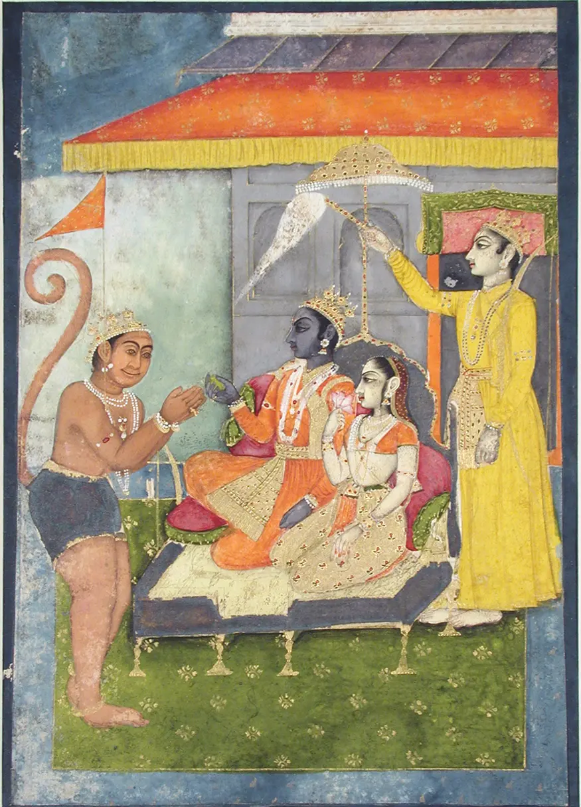
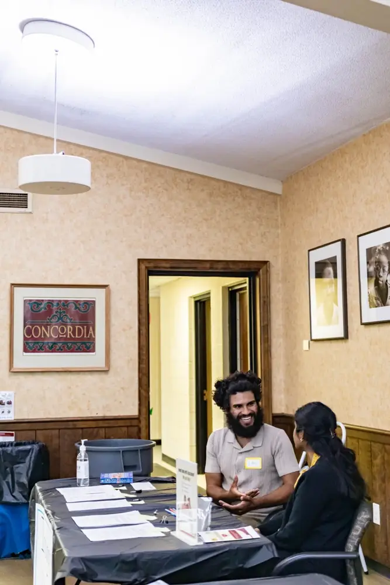
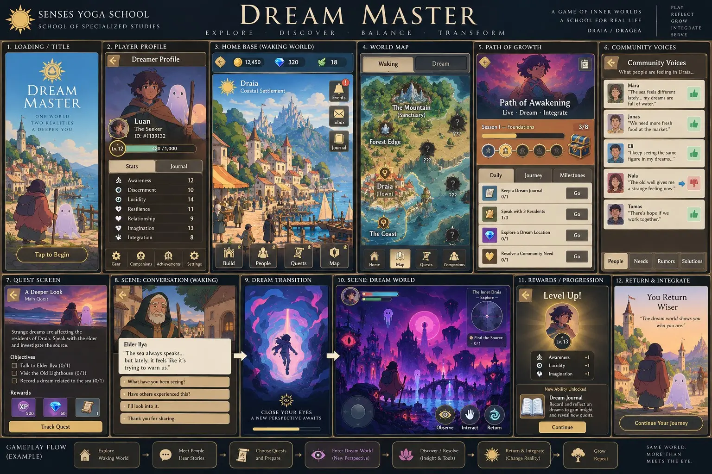

Dreams, sleep & attention
Explore dream experience, memory, meditation, sleep research, and the questions that arise when contemplative traditions meet contemporary inquiry.
Explore research →The Heroic Yogi journal records reflections from the school’s unfolding practice. Read, notice what speaks to you, and let a question lead naturally toward study, conversation, or service.
Explore the journal on Patreon →These areas can overlap. They are invitations to explore, not fixed tracks or claims that every study is a scheduled course.
Explore dream experience, memory, meditation, sleep research, and the questions that arise when contemplative traditions meet contemporary inquiry.
Explore research →Study the Upaniṣads, Rāmāyaṇa, yoga philosophy, Haṭha Yoga sources, and related contemplative traditions with care for context and interpretation.
Māṇḍūkya study →Use journaling, symbolic reflection, storytelling, sound, and interactive media as ways to examine experience and express ideas responsibly.
See Dream Master →
The Māṇḍūkya Upaniṣad offers a concise framework for examining waking (jāgrat), dreaming (svapna), deep sleep (suṣupti), and turīya—the fourth, understood as the underlying reality beyond the three ordinary states.
These teachings inform philosophical and contemplative study of dream experience and self-inquiry. They are not presented as modern scientific findings or as a scientific classification of sleep.
Browse study resources →Awareness engaged with the outward world and everyday experience.
Experience within the dreaming mind and the inward field of images.
Inquiry into dreamless sleep and the nondual reality described by the text.
A gathering place for people curious about dreams, sleep, imagination, and consciousness.
Dream Connections brings people together through conversation, reflective practice, interdisciplinary study, and shared research. Participants can explore an interest, pursue independent inquiry, or help shape a workshop, course, or community initiative. Developing a program is an invitation, never an expectation.
The school’s collaborative work offers examples: David Samael and founder Luan Seguim-Arnold co-created Dream Master; Teagan Rowe and the founder developed the Yoga Arts Garden Initiative (YAGI).
Share your interests and ideas ↗The interest form helps the school understand what participants want to explore and what they may wish to contribute.


Co-created by student David Samael and founder Luan Seguim-Arnold.
Dream Master connects dream exploration, story, reflective choice, and interactive design. Creative Arts contributes through visual storytelling, sound, and world-building. The project remains in its writing and mobile concept phase; its mechanics and visual direction will evolve as the team develops.
The dedicated developer list is for project updates and expressions of interest.
A developing research direction for studying dream experience, cognition, memory, and literature on dream therapies. Contributors may help gather sources, organize questions, document reflections, and build relationships with qualified researchers and practitioners.
Educational inquiry is distinct from providing therapy. Any future therapeutic service or participant research will require qualified leadership, a defined scope, and appropriate review.
Our study also compares what classical sources teach with what contemporary sleep and cognitive science can measure. The Māṇḍūkya Upaniṣad’s account of turīya remains a philosophical and contemplative teaching, not an established sleep stage.
Express interest in research support →Watch, reflect, and compare perspectives with the source text. Open on YouTube ↗
In a Heroic Yogi reflection on the Bhagavad Gītā, numerology and dream symbols become invitations to meditation and personal reflection—not fixed predictions. Notice what draws your attention, write down what arises, and return to quiet observation over time.
Watch the reflection →A question can become a shared project when people bring their time, skills, care, and different ways of seeing.
Join a gathering, read a source, ask a question, or share an area you want to understand.
Build a reading practice, reflective journal, research question, or supervised learning project.
Help develop a workshop, resource, creative work, or community initiative when the purpose and capacity are clear.
Help organize records, schedules, communications, and shared project processes.
Support literature review, careful sourcing, research organization, and documentation.
Contribute to mobile prototypes, accessible interfaces, visual storytelling, sound, and testing.
Support welcoming gatherings, reflective activities, workshops, and learning events.
These are areas of interest, not guaranteed roles or paid positions. Specific responsibilities, supervision, resources, and any compensation are agreed individually. Apprenticeship fieldwork follows an approved placement.
Some questions extend beyond one school. These initiatives are being explored with attention to transparency, privacy, feasibility, and community benefit.
A proposed community energy and privacy-conscious technology learning pilot. Early work focuses on feasibility research and a safe educational prototype, not an installed energy service.
Explore the initiative →A proposed transparent gifting and contribution network. It is in early research—not a live cryptocurrency, investment, or promise of financial return.
Express interest in development →Return to source texts, study materials, and shared learning resources as questions develop.
Enter the Library →There is no single way to begin. Follow a question with patience, stay connected to the sources, and let learning grow in relationship with others.
Find a community gathering →